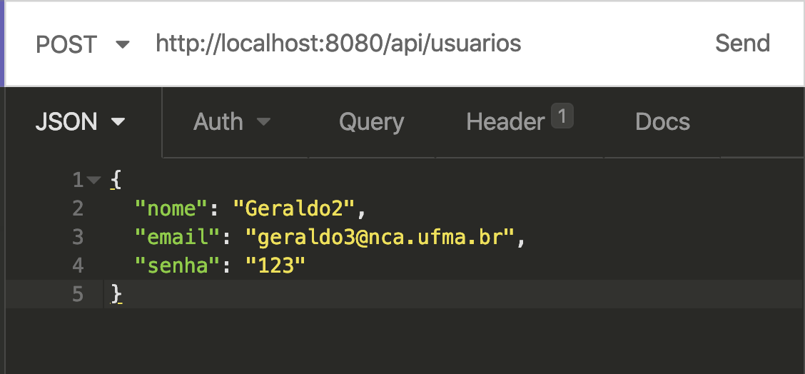
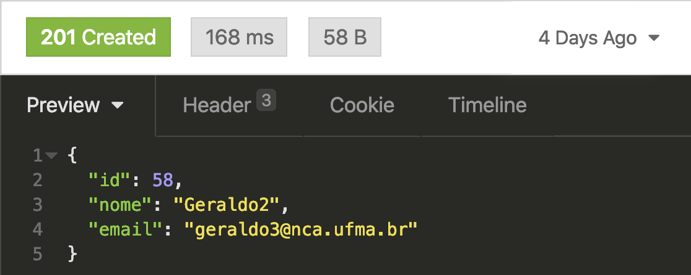
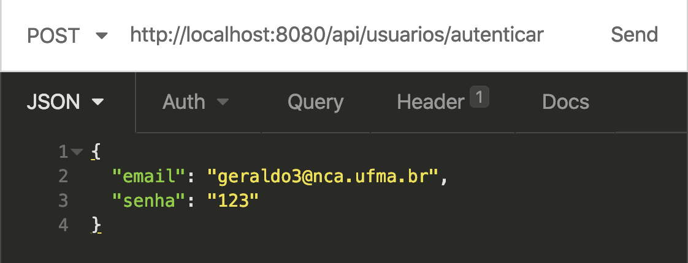
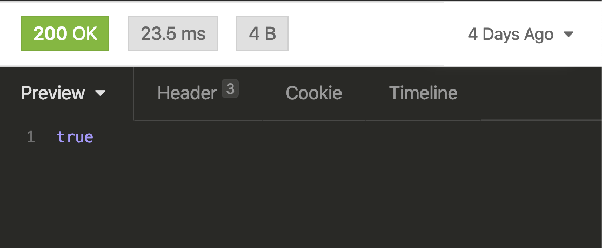
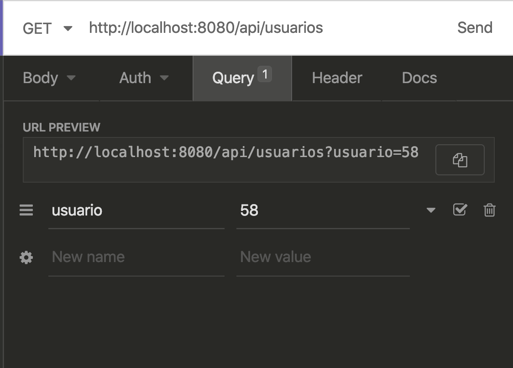
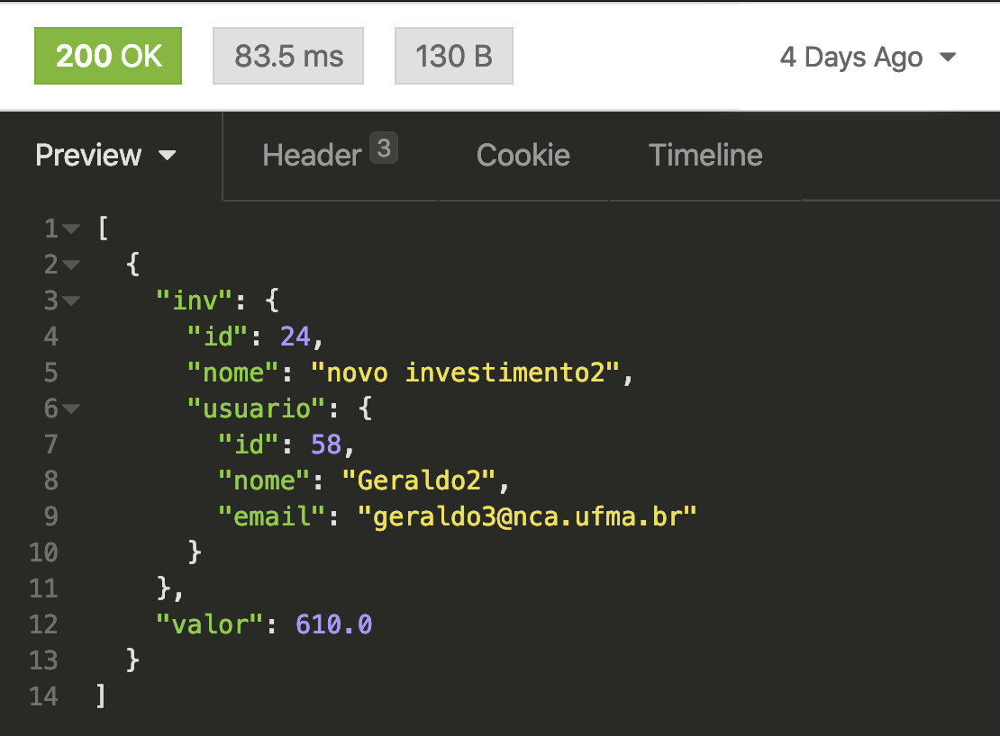

name: inverse class: center, middle, main-title # Camada Controller Laboratório de Programação --- # Objetivos - demonstrar implementação dos endpoints REST - aprender sobre modelos de resposta em HTTP --- # Visão de Casos de Uso <center> <img src="../../_doc_projeto/uc.png" width="600"> </center> --- #Visão Arquitetural <center> <img src="../../_doc_projeto/arquitetura.png" width="650"> </center> --- #Visão de Classes <center> <img src="../../_doc_projeto/controller.png" width="750"> </center> --- name: inverse class: center, middle, main-title # Implementando UsuarioController --- #Endpoints de `UsuarioController` - salvar - deve enviar dados do usuário a ser cadastrado - autenticar - deve informar email e senha - obterInvestimentos - deve informar usuario e receber investimentos com saldo --- #Configurando `UsuarioController` - Passo 1: criar o controller ```java package com.labprog.patrimonio.controler; public class UsuarioController { } ``` - Passo 2: anotar como controller REST ```java @RestController public class UsuarioController { } ``` --- #Configurando `UsuarioController` - Passo 3: definir o mapeamento da API ```java @RestController @RequestMapping("/api/usuarios") public class UsuarioController { } ``` - Para simplificar, vamos usar `api` e nome do controller `usuarios` --- ##Configurando `UsuarioController` - Passo 4: obter uma instância injetada de UsuarioService ```java @RestController @RequestMapping("/api/usuarios") public class UsuarioController { @Autowired UsuarioService service; } ``` - Passo 5: definir endpoints - salvar precisa ser `post` - autenticar pode ser `post` - os dois entram em conflito, portanto terá que fazer um mapeamento separado para 1 deles - obter investimentos é `get` --- ##Construindo `UsuarioController` - Construindo um endpoint `post` para salvar ```java @PostMapping public ResponseEntity salvar(@RequestBody UsuarioDTO dto) { } ``` - Adicionar anotação `@PostMapping` - Necessário: - receber no corpo (`@RequestBody`) um json de usuário - aqui transformado em um DTO: `UsuarioDTO` - Retornar: - `ResponseEntity`: resposta padrão no HTTP - Status + objetos - ou somente status --- #Ok: Anotações - `@PostMapping`: representa que ali está sendo criado um endpoint `post` - se desejar, pode especificar um caminho adicional na URL - `@PostMapping("/novo")` - `@ResponseBody`: converte o JSON no objeto tipo `UsuarioDTO` - a sequencia dos campos do JSON devem ser as mesmas que em `UsuarioDTO` --- #Ok: `UsuarioDTO` - Objeto simples para representar o JSON da requisição ```java package com.labprog.patrimonio.model.dto; @Data @Builder @AllArgsConstructor public class UsuarioDTO { private String nome; private String email; private String senha; } ``` --- #Ok: `ResponseEntity` - Resposta enviada pelo método - pode ser com template ResponseEntity<T> para especificar o tipo de objeto de retorno - Algumas opções: ```java new ResponseEntity(<objeto>, HttpStatus.CREATED); ResponseEntity.badRequest().body(e.getMessage()); ResponseEntity.ok(<objeto>); ... ``` - Os objetos são convertidos em JSON --- ##Construindo `UsuarioController` - Construindo um endpoint `post` para salvar - converte o DTO em Entity ```java @PostMapping public ResponseEntity salvar(@RequestBody UsuarioDTO dto) { Usuario usuario = Usuario.builder() .nome(dto.getNome()) .email(dto.getEmail()) .senha(dto.getSenha()).build(); } ``` --- ##Construindo `UsuarioController` - Construindo um endpoint `post` para salvar - converte o DTO em Entity - tenta salvar o objeto ```java @PostMapping public ResponseEntity salvar(@RequestBody UsuarioDTO dto) { Usuario usuario = Usuario.builder() .nome(dto.getNome()) .email(dto.getEmail()) .senha(dto.getSenha()).build(); try { Usuario salvo = service.salvar(usuario); } catch (RegraNegocioRunTime e) { } } ``` --- ##Construindo `UsuarioController` - Construindo um endpoint `post` para salvar - converte o DTO em Entity - tenta salvar o objeto - retorna ```java @PostMapping public ResponseEntity salvar(@RequestBody UsuarioDTO dto) { Usuario usuario = Usuario.builder() .nome(dto.getNome()) .email(dto.getEmail()) .senha(dto.getSenha()).build(); try { Usuario salvo = service.salvar(usuario); return new ResponseEntity(salvo, HttpStatus.CREATED); } catch (RegraNegocioRunTime e) { return ResponseEntity.badRequest().body(e.getMessage()); } } ``` --- ##Construindo `UsuarioController` - Autenticar - também é um post, precisamos mudar o endpoint - obter do DTO os campos - retornar ```java @PostMapping("/autenticar") public ResponseEntity autenticar(@RequestBody UsuarioDTO dto) { try { service.efetuarLogin(dto.getEmail(), dto.getSenha()); return ResponseEntity.ok(true); } catch(RegraNegocioRunTime e) { return ResponseEntity.badRequest().body(e.getMessage()); } } ``` --- ##Construindo `UsuarioController` - obter Investimentos - necessário indicar o usuário como parâmetro - aqui `@RequestParam`: 'http://localhost:8080/api/usuarios?usuario=1' ```java @GetMapping public ResponseEntity obterInvestimentos( @RequestParam("usuario") Long idUsuario) { try { List<InvestimentoSaldo> invs = service.obterSaldos(idUsuario); return new ResponseEntity(invs, HttpStatus.OK); } catch(RegraNegocioRunTime e) { return ResponseEntity.badRequest().body(e.getMessage()); } } ``` --- ##Testando `UsuarioController` - Inicialmente com o <a href="https://insomnia.rest/">Insomnia</a> - Primeiro salvar usuário - inicializar o banco de dados - inicializar projeto - criar nova request, tipo `POST`, e corpo `JSON` - inserir a URL: 'http://localhost:8080/api/usuarios' - inserir como teste o seguinte JSON (conforme `UsuarioDTO`): ```JSON { "nome": "Geraldo2", "email": "geraldo3@nca.ufma.br", "senha": "123" } ``` --- ##Testando `UsuarioController` <center>  </center> --- ##Testando `UsuarioController` - clicar em enviar! <center>  </center> --- ##Testando `UsuarioController` - Autenticar usuário <center>  </center> --- ##Testando `UsuarioController` - Autenticar usuário <center>  </center> --- ##Testando `UsuarioController` - Obter investimentos <center>  </center> --- ##Testando `UsuarioController` - Obter investimentos <center>  </center> --- name: inverse class: center, middle, main-title # Implementando InvestimentoController --- ##Endpoints de `InvestimetoController` - salvar (post) - atualizar (put) - atualizar investimento existente - remover (delete) - remover investimento existente - buscarInvestimento (get) - obter investimentos por filtro - obterSaldoInvestimento (get) - obter valor total do investimento --- ## Implementando `PosicaoController` - inicializando ```java @RestController @RequestMapping("/api/investimentos") public class InvestimentoController { @Autowired InvestimentoService service; ``` --- ## Implementando `InvestimentoController` - Atualizar - o id do investimento é pego por path `@PathVariable` - Ex: 'http://localhost:8080/api/investimentos/22' - e o json por `@RequestBody` transformado no DTO ```java @PutMapping("{id}") public ResponseEntity atualizar( @PathVariable("id") Long idInvestimento, @RequestBody InvestimentoDTO dto) { try { Investimento inv = Investimento.builder() .id(idInvestimento) .nome(dto.getNome()) .usuario(Usuario.builder().id(dto.getIdUsuario()).build()) .build(); Investimento salvo = service.atualizar(inv); return ResponseEntity.ok(salvo); } catch (RegraNegocioRunTime e) { return ResponseEntity.badRequest().body(e.getMessage()); } } ``` --- ## Implementando `InvestimentoController` - Remover - o id do investimento é pego por path `@PathVariable` - Ex: 'http://localhost:8080/api/investimentos/22' ```java @DeleteMapping("{id}") public ResponseEntity remover( @PathVariable("id") Long idInvestimento) { try { Investimento inv = Investimento.builder().id(idInvestimento).build(); service.remover(inv); return ResponseEntity.ok(HttpStatus.NO_CONTENT); } catch(RegraNegocioRunTime e) { return ResponseEntity.badRequest().body(e.getMessage()); } } ``` --- ## Implementando `InvestimentoController` - Buscar - usando filtros - cada campo num parametro - somente usuário é obrigatório ```java @GetMapping("/obter") public ResponseEntity buscarInvestimento( @RequestParam(value="usuario", required=true) Long idUsuario, @RequestParam(value="nome", required=false) String nome) { Investimento filtro = Investimento.builder() .nome(nome) .usuario(Usuario.builder() .id(idUsuario).build()) .build(); List<Investimento> investimentos = service.buscar(filtro); return ResponseEntity.ok(investimentos); } ``` --- ## Implementando `InvestimentoController` - Obter Saldo ```java @GetMapping("/saldo") public ResponseEntity obterSaldoInvestimento( @RequestParam("id") Long idInvestimneto) { Investimento inv= Investimento.builder() .id(idInvestimneto).build(); try { Double valor = service.obterValorTotal(inv); return ResponseEntity.ok(valor); } catch(RegraNegocioRunTime e) { return ResponseEntity.badRequest().body(e.getMessage()); } } ``` --- name: inverse class: center, middle, main-title # Implementando PosicaoController --- ##Endpoints de `PosicaoController` - salvar (post) - atualizar (put) - remover (delete) - buscarPosicao (get) - obter posicoes --- ## Implementando `PosicaoController` - Necessário DateFormat para converter strings do json em Date ```java @RestController @RequestMapping("/api/posicao") public class PosicaoController { @Autowired PosicaoService service; DateFormat formatter = new SimpleDateFormat("dd/MM/yy"); ``` --- ## Implementando `PosicaoController` - Salvar ```java @PostMapping public ResponseEntity salvar(@RequestBody PosicaoDTO dto) { try { Posicao pos = Posicao.builder() .investimento(Investimento .builder() .id(dto.getIdInvestimento()) .build()) .valor(dto.getValor()) .data(formatter.parse(dto.getData())) .build(); Posicao salvo = service.salvar(pos); return new ResponseEntity(salvo, HttpStatus.CREATED); } catch (RegraNegocioRunTime e) { return ResponseEntity.badRequest().body(e.getMessage()); } catch (ParseException e) { return ResponseEntity.badRequest().body(e.getMessage()); } } ``` --- ## Implementando `PosicaoController` - Buscar - usando filtros - investimento é campo obrigatório ```java @GetMapping("/obter") public ResponseEntity buscarPosicao( @RequestParam(value="investimento", required=true) Long idInvestimento){ Posicao filtro; filtro = Posicao.builder() .investimento( Investimento.builder() .id(idInvestimento) .build()) .build(); List<Posicao> posicoes = service.buscar(filtro); return ResponseEntity.ok(posicoes); } ``` --- name: inverse class: center, middle, main-title # Demo com Insomnia